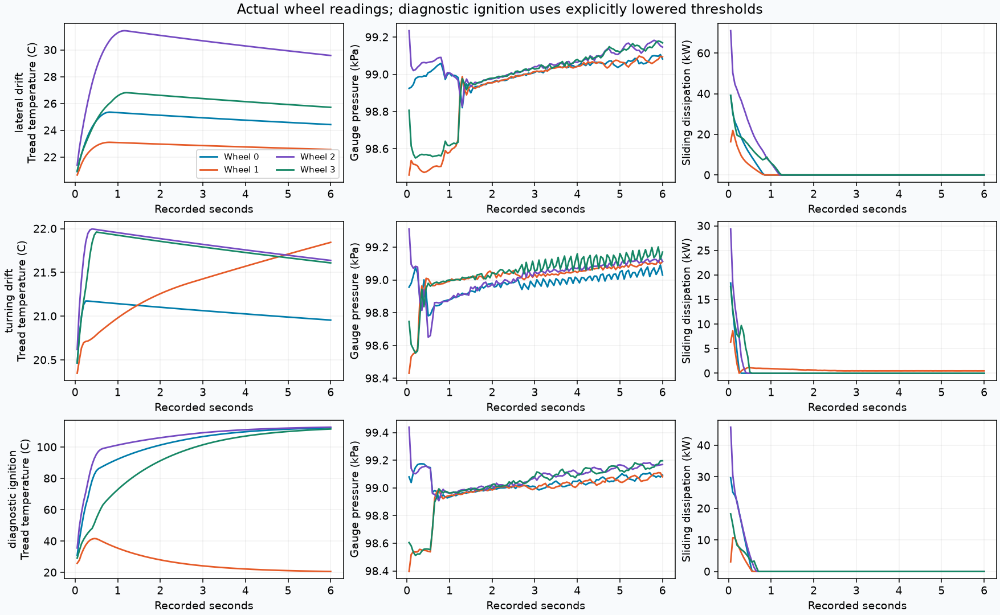

Static support: no false sliding heat or smoke
6 s, actual 20 Hz snapshots. Scalar trace.
Independent tread, carcass and gas temperatures now feed XPBD inflation pressure and each wheel's grip. Actual combined sliding creates one on-demand world-aligned smoke domain per car.
| Fixture | Observed result |
|---|---|
| Holding / airborne | 0 W sliding dissipation, 0 J sliding heat, zero domain acquisitions. Compression/expansion can still change gas temperature. |
| Lateral drift | 73.9 kW peak wheel sliding; largest per-wheel heat gain 21.29 kJ. One domain, two scrolls; injection active for 1.2 s, then a lingering/fading plume. |
| Turning drift | 1.550 rad actual heading change, 33.3 kW peak sliding, one world-aligned domain. Existing smoke receives no car yaw or translation. |
| Ignition diagnostic | Sustained-overheat trigger and rubber consumption pass. Lowered heat capacity / thresholds are explicit test overrides; this does not calibrate a real compound. |
| Pressure / energy | Hot gas raises pressure without rebuilding XPBD particles. Three-capacity thermal balance residual 0.000000584 J in the independent heat test. Not a closed whole-vehicle energy proof. |
| Lifetime / ownership | Exact overlapping density, temperature and world velocities survive cell relocation. Stop/start reuses storage; quiet bounds freeze, contents fade before release. Pause/reset/retirement and transactional C copying pass. |
All clips start paused. Play one to pause the others. The pale plume is a vertical projection of recorded density; the outlined rectangle is the finite world-space domain. The car rectangle is only a native pose guide.
6 s, actual 20 Hz snapshots. Scalar trace.
6 s, actual 20 Hz snapshots. Scalar trace.
6 s, actual 20 Hz snapshots. Scalar trace.
6 s, actual 20 Hz snapshots. Scalar trace.
6 s, actual 20 Hz snapshots. Scalar trace.

Gas starts near 20 C and cools during XPBD inflation/volume expansion; tread heat does not instantly become gas heat. The runtime thermal and ignition numbers are provisional, not measured tyre-compound properties.
Thermal / relocation assertions · Vehicle and actual C-lifecycle checks · Native source / capture hashes · 14-case brake audit · Brake source provenance · Projection / playback provenance